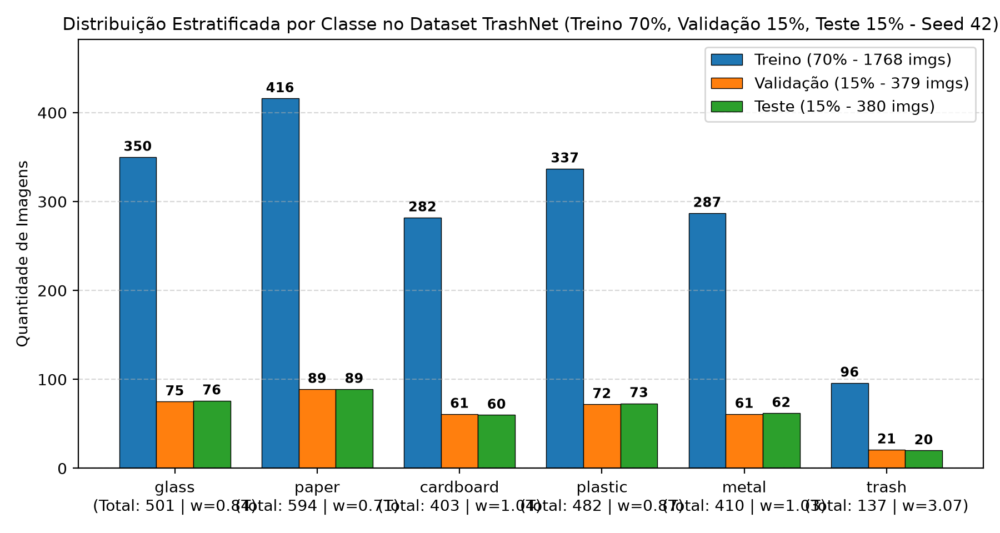
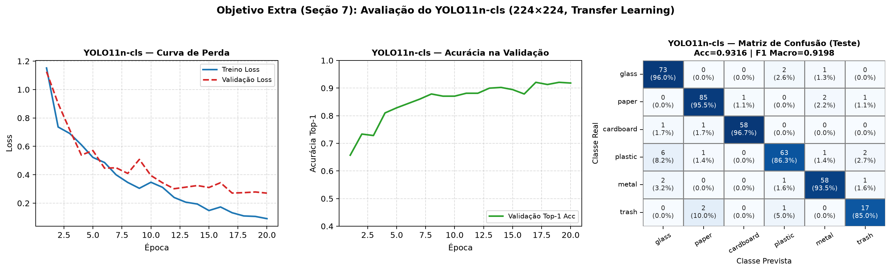

Figura 2 – Exemplos de imagens das seis classes no conjunto de treino

Fonte: Autores, com imagens de Yang e Thung (2016).
RESUMO: Separar resíduos recicláveis por imagem é difícil porque os objetos variam muito e algumas classes têm poucas fotos. Este trabalho compara redes neurais na classificação do conjunto TrashNet. Antes de dividir os dados, removemos 6 fotos que faziam parte de 3 pares duplicados com rótulos conflitantes. Ficamos com 2.521 imagens limpas em seis classes (glass, paper, cardboard, plastic, metal e trash). Usamos divisão estratificada fixa com 70% para treino, 15% para validação e 15% para teste (semente 42). Rodamos seis experimentos obrigatórios comparando MLP e CNN com e sem pesos de classe em 128 × 96, além de testar a CNN em 256 × 192 e 512 × 384. Como extra, fizemos ajuste fino do YOLO11n-cls (224 × 224). A CNN superou muito a MLP (74,67% contra 34,83% de acurácia) usando menos de 0,3% dos parâmetros. Os pesos de classe subiram o recall de trash na CNN de 0,45 para 0,60, mas baixaram a precisão. Aumentar a resolução para 512 × 384 não melhorou a acurácia (70,98%) e deixou cada época cerca de 22,8 vezes mais lenta. O YOLO11n-cls chegou a 91,03% de acurácia no teste. Concluímos que a CNN funciona bem com poucos parâmetros e que a transferência de aprendizagem ajuda muito em bases pequenas.
Palavras-chave: Redes Neurais Artificiais. Visão Computacional. TrashNet. Classificação de Resíduos. Transferência de Aprendizagem.
Separar bem o lixo reciclável é essencial para o reaproveitamento de materiais. A triagem manual, porém, cansa os trabalhadores, causa erros e traz riscos à saúde. Por isso, usar Redes Neurais Artificiais (RNAs) e aprendizado profundo (Deep Learning) em visão computacional ajuda a reconhecer vidro, papel, papelão, plástico e metal direto de fotos (BISHOP; NASRABADI, 2006; GOODFELLOW et al., 2016).
Na disciplina, estudamos dois tipos principais de redes (BARBOSA, 2025). A rede Multilayer Perceptron (MLP) usa camadas densas com ativação suave e aprende pelo algoritmo de backpropagation, que ajusta os pesos a partir do erro da saída. Com isso, ela resolve problemas não lineares que o Perceptron Simples e o ADALINE não resolvem (RUMELHART; HINTON; WILLIAMS, 1986; HAYKIN, 2001; SILVA; SPATTI; FLAUZINO, 2010). Mas a MLP transforma a imagem em uma lista longa de números, perde a posição dos pixels vizinhos e cria milhões de pesos logo na entrada. Já a Rede Neural Convolucional (CNN) lê a imagem como matriz e passa pequenos filtros compartilhados e camadas de pooling para reduzir o mapa. Assim, ela aprende bordas, cantos e formas antes da camada final de decisão (ZEILER; FERGUS, 2014; GOODFELLOW et al., 2016; BARBOSA, 2025).
Nosso objetivo é medir o desempenho, o tempo de treino e o tempo de inferência de modelos MLP e CNN nas seis classes do TrashNet (YANG; THUNG, 2016). Testamos quatro pontos: (i) comparar MLP e CNN em 128 × 96 pixels; (ii) testar pesos de classe para ajudar a classe minoritária trash; (iii) ver se aumentar a resolução (128 × 96, 256 × 192 e 512 × 384) compensa na CNN; e (iv) testar transferência de aprendizagem (transfer learning, aproveitando pesos já treinados em outra base) com o YOLO11n-cls.
Usamos o arquivo oficial dataset-resized.zip do TrashNet, que tem 2.527 fotos coloridas RGB de 512 × 384 pixels (largura × altura). Conferimos todos os arquivos por script e não achamos nenhuma imagem corrompida, sendo 100% em RGB. Mas o cálculo de hash MD5 achou três pares de fotos idênticas com rótulos diferentes: plastic152.jpg/glass176.jpg, plastic332.jpg/glass389.jpg e metal91.jpg/glass115.jpg. Para evitar ruído e vazamento entre os conjuntos, removemos esses 6 arquivos antes de dividir a base. Sobraram 2.521 imagens limpas em seis classes: glass (498), paper (594), cardboard (403), plastic (480), metal (409) e trash (137).
As fotos do TrashNet foram tiradas em fundo claro uniforme e mostram um objeto por vez. Muitos objetos estão amassados, são transparentes (vidro e plástico) ou refletem luz (metal e vidro), o que dificulta separar as classes só pela cor. A Figura 1 mostra a divisão das classes após a limpeza, e a Figura 2 traz exemplos de cada categoria.

Para manter os testes reprodutíveis e evitar vazamento de dados (data leakage), fizemos uma divisão estratificada fixa com semente 42 nas 2.521 imagens. Ficamos com 1.764 imagens (70%) para treino, 378 (15%) para validação e 379 (15%) para teste. A classe trash manteve cerca de ~5,43% em todas as partes (96 no treino, 21 na validação e 20 no teste). Convertemos as imagens para RGB e redimensionamos de 512 × 384 para 128 × 96 e 256 × 192 por interpolação bilinear (Figura 3). Depois, dividimos os pixels por 255 para deixar os valores no intervalo [0, 1]. No treino, a média RGB foi [0,6727; 0,6397; 0,6047] e o desvio padrão foi [0,1837; 0,1828; 0,1934]. Para comparar MLP e CNN de forma justa, aplicamos a mesma aumentação de dados leve só no treino: espelhamento horizontal (p = 0,5) e rotação aleatória de ±10° (p = 0,5).
metal107.jpg nas três resoluções testadas (L × A)
Separamos arquitetura (o caminho geral do sinal na rede) de topologia (escolhas de projeto, como número de camadas e de neurônios). Implementamos os seis modelos obrigatórios em PyTorch (PASZKE et al., 2019) e treinamos todos do zero. Usamos mini-lotes de 32 imagens, semente fixa (42) e limite de 60 épocas (cada época é uma passagem completa pelo treino). O otimizador foi o Adam com taxa inicial lr = 10−3 e decaimento de pesos 10−4. Também usamos ReduceLROnPlateau (fator 0,5 e paciência 3) e perda Entropia Cruzada (CrossEntropyLoss). Nas camadas ocultas, usamos ReLU (g(u) = max(0, u)) porque ela evita contas exponenciais e satura menos que funções sigmoidais. Adotamos Parada Antecipada (Early Stopping) com paciência de 10 épocas para interromper o treino quando o F1 macro de validação (média simples do F1 entre as seis classes) para de melhorar. No fim, restauramos os melhores pesos para testar uma única vez (BARBOSA, 2025).
AdaptiveAvgPool2d(1)), que resume cada mapa em uma média. A segunda parte achata o vetor (Flatten) e passa por uma MLP (64 neurônios ReLU, Dropout 0,20 e 6 saídas). Assim, a CNN mantém exatamente 28.358 parâmetros nas três resoluções.Objetivo Extra (YOLO11n-cls): Fizemos transferência de aprendizagem com o modelo yolo11n-cls.pt (Ultralytics 8.4.216, pré-treinado no ImageNet-1K, 1.538.790 parâmetros) no modo classify (JOCHER; CHAURASIA; QIU, 2024). Mantivemos exatamente a mesma divisão das 2.521 imagens (semente 42). O ajuste fino rodou em 224 × 224 pixels por 20 épocas, com otimizador AdamW (lr0 = 0,001, lote 32) e aumentação padrão do YOLO classify só no treino.
Hardware e Medição de Custo: Disparamos os treinos remotamente do Linux local para uma CPU Intel(R) Core(TM) i7-4850HQ CPU @ 2.30GHz com 16,0 GB de RAM (Darwin 20.6.0 / macOS, Python 3.11.18 e PyTorch 2.2.2), sem GPU CUDA. Medimos o pico de RAM (RSS) com a biblioteca psutil. Cronometramos só o laço de treino e validação por época usando time.perf_counter(), fora download e leitura de disco. Também medimos o tempo médio de inferência por imagem (ms/img) nas 379 fotos de teste na mesma CPU.
A Tabela 1 reúne as métricas de validação e teste, o tempo de treino, a RAM e a inferência dos seis experimentos obrigatórios e do bônus com YOLO11n-cls. A Tabela 2 mostra precisão (acertos entre as previsões da classe), recall (taxa de itens reais encontrados), F1 e suporte nas 379 imagens de teste, usando zero_division=0 quando uma classe não recebe previsões.
| Experimento | Res. (L×A) | Pesos | Parâm. | Tam. (MB) | Ép. (Mel/Tot) | T. Tot. (s) | T/Ép. (s) | Inf. (ms/img) | RAM (MB) | Val F1 Macro | Teste Acc | Teste F1 Macro |
|---|---|---|---|---|---|---|---|---|---|---|---|---|
| Exp 1: MLP | 128×96 | Não | 9.471.110 | 36,13 | 2 / 12 | 70,97 | 5,91 | 0,24 | 963,0 | 0,2000 | 34,83% | 0,2275 |
| Exp 2: MLP | 128×96 | Sim | 9.471.110 | 36,13 | 1 / 11 | 64,91 | 5,90 | 0,23 | 963,7 | 0,0785 | 25,86% | 0,1100 |
| Exp 3: CNN | 128×96 | Não | 28.358 | 0,12 | 42 / 52 | 213,74 | 4,11 | 0,62 | 846,0 | 0,7059 | 74,67% | 0,7154 |
| Exp 4: CNN (Melhor Val) | 128×96 | Sim | 28.358 | 0,12 | 39 / 49 | 200,80 | 4,10 | 0,82 | 675,1 | 0,7277 | 73,09% | 0,7036 |
| Exp 5: CNN | 256×192 | Não | 28.358 | 0,12 | 45 / 55 | 1.206,65 | 21,94 | 3,74 | 2.112,3 | 0,6764 | 74,67% | 0,7213 |
| Exp 6: CNN | 512×384 | Não | 28.358 | 0,12 | 23 / 33 | 3.088,45 | 93,59 | 18,07 | 6.439,6 | 0,6212 | 70,98% | 0,6582 |
| Exp 7 (Bônus): YOLO11n-cls | 224×224 | Pré-treinado | 1.538.790 | 3,05 | 20 / 20 | 2.462,58 | 123,13 | 16,70 | 454,4 | 0,9233* | 91,03% | 0,8865 |
zero_division=0)| Experimento | glass (sup=75) P / R / F1 |
paper (sup=89) P / R / F1 |
cardboard (sup=61) P / R / F1 |
plastic (sup=72) P / R / F1 |
metal (sup=62) P / R / F1 |
trash (sup=20) P / R / F1 |
|---|---|---|---|---|---|---|
| Exp 1: MLP (128×96) | 0,50 / 0,01 / 0,03 | 0,28 / 0,97 / 0,44 | 0,92 / 0,38 / 0,53 | 0,46 / 0,31 / 0,37 | 0,00 / 0,00 / 0,00 | 0,00 / 0,00 / 0,00 |
| Exp 2: MLP (128×96, Pesos) | 0,00 / 0,00 / 0,00 | 0,24 / 1,00 / 0,39 | 1,00 / 0,08 / 0,15 | 0,25 / 0,01 / 0,03 | 0,75 / 0,05 / 0,09 | 0,00 / 0,00 / 0,00 |
| Exp 3: CNN (128×96) | 0,65 / 0,85 / 0,74 | 0,76 / 0,88 / 0,82 | 0,91 / 0,85 / 0,88 | 0,72 / 0,58 / 0,65 | 0,76 / 0,61 / 0,68 | 0,64 / 0,45 / 0,53 |
| Exp 4: CNN (128×96, Pesos) | 0,66 / 0,81 / 0,73 | 0,80 / 0,80 / 0,80 | 0,93 / 0,82 / 0,87 | 0,69 / 0,61 / 0,65 | 0,78 / 0,63 / 0,70 | 0,40 / 0,60 / 0,48 |
| Exp 5: CNN (256×192) | 0,61 / 0,80 / 0,69 | 0,80 / 0,84 / 0,82 | 0,93 / 0,89 / 0,91 | 0,71 / 0,65 / 0,68 | 0,74 / 0,63 / 0,68 | 0,89 / 0,40 / 0,55 |
| Exp 6: CNN (512×384) | 0,60 / 0,79 / 0,68 | 0,67 / 0,91 / 0,77 | 0,87 / 0,87 / 0,87 | 0,70 / 0,60 / 0,65 | 0,88 / 0,45 / 0,60 | 0,83 / 0,25 / 0,38 |
| Exp 7: YOLO11n-cls (Bônus) | 0,95 / 0,95 / 0,95 | 0,93 / 0,90 / 0,91 | 0,98 / 0,93 / 0,96 | 0,89 / 0,89 / 0,89 | 0,89 / 0,94 / 0,91 | 0,65 / 0,75 / 0,70 |
A Figura 4 mostra as curvas de perda e acurácia por época dos seis experimentos obrigatórios. A Figura 5 traz as matrizes de confusão no conjunto de teste.


A Figura 6 mostra o efeito da resolução na CNN sem pesos (Experimentos 3, 5 e 6). A Figura 7 mostra os erros do modelo obrigatório de maior F1 macro na validação (Exp 4: CNN 128 × 96 com pesos, Val F1 Macro = 0,7277), com 102 erros e 277 acertos em 379 amostras.


Já a Figura 8 apresenta o resultado do YOLO11n-cls (91,03% de acurácia, 345 acertos e 34 erros).

Na comparação em 128 × 96 pixels, usamos o mesmo limite de épocas, a mesma paciência e a mesma aumentação de dados. A CNN se saiu muito melhor que a MLP. A MLP (Exp 1) tem 9.471.110 parâmetros (36,13 MB) porque liga cada um dos 36.864 valores RGB da imagem achatada aos neurônios ocultos e perde a posição dos pixels. Ela quase não aprendeu: o Early Stopping parou na época 12 (melhor época 2), com 34,83% de acurácia e 0,2275 de F1 macro no teste. A MLP zerou em metal e trash (F1 = 0,00 com zero_division=0) e chutou quase tudo como paper (recall de 0,97 e precisão de 0,28).
Já a CNN (Exp 3) usou só 28.358 parâmetros (334 vezes menor e 0,12 MB) por causa dos filtros compartilhados e do Global Average Pooling. Ela chegou a 74,67% de acurácia e 0,7154 de F1 macro no teste. A perda caiu até a época 42 (parando na 52) sem sinais fortes de overfitting (quando o modelo decora o treino e vai mal na validação).
Os pesos de classe (wtrash = 3,0625 contra wpaper = 0,7067) tiveram efeitos diferentes nas duas redes. Na MLP (Exp 2), o treino ficou instável já na época 1 e parou na época 11. A acurácia caiu para 25,86% (F1 macro 0,1100), com recall zero em glass e trash.
Na CNN (Exp 4), os pesos funcionaram bem para a classe rara: o recall de trash subiu de 0,45 para 0,60 (12 de 20 acertos). O Exp 4 também teve o maior F1 macro de validação entre os obrigatórios (0,7277). Mas a precisão de trash caiu de 0,64 para 0,40. No teste, o Exp 4 fez 73,09% de acurácia e 0,7036 de F1 macro, contra 74,67% e 0,7154 do Exp 3. Isso mostra a troca comum entre achar mais itens raros e gerar mais alarmes falsos.
Com o Global Average Pooling, a CNN manteve 28.358 parâmetros nas três resoluções. Mas o custo subiu muito com imagens maiores. O tempo por época passou de 4,11 s (128 × 96) para 21,94 s (256 × 192, ~5,3×) e 93,59 s (512 × 384, ~22,8×). O pico de RAM saltou de 846,0 MB para 2.112,3 MB e 6.439,6 MB. No teste, 256 × 192 empatou em acurácia com 128 × 96 (74,67%) e teve F1 macro um pouco maior (0,7213 contra 0,7154, sem teste estatístico formal). Já 512 × 384 caiu para 70,98% de acurácia e 0,6582 de F1 macro (melhor época 23/33).
Uma possível explicação é que os filtros 3×3 fixos passam a ver uma fração menor do objeto em imagens maiores (não testamos essa hipótese). Por isso, imagens maiores não compensaram o aumento de tempo e memória nesta arquitetura fixa. Na CPU, as medições mostram inferência rápida, de 0,62 ms/imagem em 128 × 96 e 3,74 ms/imagem em 256 × 192, subindo para 18,07 ms/imagem em 512 × 384.
Na análise de erros do Exp 4 (Figura 7), a rede confundiu mais glass, plastic e metal. Por exemplo, errou glass270.jpg como plastic (97,9%) e metal37.jpg como plastic (93,9%). Isso pode acontecer porque esses materiais são transparentes e refletem luz de forma parecida. Também houve confusão em embalagens com rótulos claros: trash91.jpg saiu como paper (95,7%), cardboard33.jpg como plastic (89,3%), paper31.jpg como plastic (83,2%) e plastic364.jpg como paper (82,2%). Além da remoção prévia dos três pares duplicados conflitantes, outra limitação é que não ajustamos hiperparâmetros da MLP (taxa de aprendizagem, tamanho das camadas, normalização). Ela ficou perto do acaso, então a diferença para a CNN mostra o resultado desta configuração, e não o limite da MLP. O dataset também tem limitações: fundo claro uniforme e um só objeto centralizado, o que dificulta o uso direto em fotos reais.
Yang e Thung (2016) relataram 63% com SVM em seis classes e 22% com CNN em cinco classes (sem trash). Depois, o repositório oficial do TrashNet informou cerca de ~75% com CNN na divisão 70/13/17 (THUNG; YANG, 2017). Nossas CNNs em 128 × 96 e 256 × 192 (74,67%) ficaram perto dessa marca. Mas a comparação não é direta porque mantivemos trash, tiramos 6 fotos duplicadas e usamos divisão 70/15/15, outra resolução e outras camadas.
O YOLO11n-cls (Exp 7) atingiu 91,03% de acurácia e 0,8865 de F1 macro, com 0,75 de recall em trash e 34 erros em 379 imagens. Ele superou em +16,36 p.p. as melhores CNNs obrigatórias no teste (Exp 3 e Exp 5). O YOLO já vem treinado no ImageNet-1K, então já sabe reconhecer bordas e formas gerais, e só ajustamos a rede para as seis classes (YOSINSKI et al., 2014). Ele também tem arquitetura C3k2 (1,54M parâmetros), entrada 224 × 224 e aumentação padrão do Ultralytics (JOCHER; CHAURASIA; QIU, 2024). O treino em CPU levou 2.462,58 s, mas a inferência ficou em 16,70 ms/imagem na mesma CPU.
Nos testes com o TrashNet limpo (2.521 imagens), as CNNs superaram muito as MLPs usando menos de 0,3% dos parâmetros. Os pesos de classe subiram o recall de trash na CNN de 0,45 para 0,60, mas reduziram a precisão. Aumentar a resolução para 512 × 384 sem mudar a profundidade da rede piorou a acurácia no teste (70,98% contra 74,67%) e deixou cada época ~22,8× mais lenta. O YOLO11n-cls chegou a 91,03% de acurácia e 0,8865 de F1 macro, mostrando que transferência de aprendizagem ajuda muito em bases pequenas e desbalanceadas. Como trabalhos futuros, sugerimos testar CNNs mais profundas em resoluções maiores, buscar melhores hiperparâmetros com validação cruzada e avaliar fotos reais com fundos variados.
BARBOSA, Paulo Cirillo Souza. Redes Neurais Artificiais: Percursos de Aprendizagem 1 a 4. Fortaleza: Universidade de Fortaleza (EAD Unifor), 2025.
BISHOP, Christopher M.; NASRABADI, Nasser M. Pattern recognition and machine learning. New York: Springer, 2006.
GOODFELLOW, Ian; BENGIO, Yoshua; COURVILLE, Aaron. Deep learning. Cambridge: MIT Press, 2016.
HAYKIN, Simon. Redes neurais: princípios e prática. 2. ed. Porto Alegre: Bookman, 2001.
JOCHER, Glenn; CHAURASIA, Ayush; QIU, Jing. Ultralytics YOLO11: Classification documentation. 2024. Disponível em: https://docs.ultralytics.com/tasks/classify/. Acesso em: 22 nov. 2026.
PASZKE, Adam et al. PyTorch: An imperative style, high-performance deep learning library. In: Advances in Neural Information Processing Systems (NeurIPS), v. 32, 2019.
RUMELHART, David E.; HINTON, Geoffrey E.; WILLIAMS, Ronald J. Learning representations by back-propagating errors. Nature, v. 323, p. 533-536, 1986.
SILVA, Ivan Nunes da; SPATTI, Danilo Hernane; FLAUZINO, Rogério Andrade. Redes neurais artificiais para engenharia e ciências aplicadas. São Paulo: Artliber, 2010.
THUNG, Gary; YANG, Mindy. TrashNet: dataset of images of trash. GitHub, 2017. Disponível em: https://github.com/garythung/trashnet. Acesso em: 22 nov. 2026.
YANG, Mindy; THUNG, Gary. Classification of trash for recyclability status. Stanford University: CS229 Project Report, 2016. Repositório e dataset disponíveis em: https://github.com/garythung/trashnet. Acesso em: 22 nov. 2026.
YOSINSKI, Jason et al. How transferable are features in deep neural networks? In: Advances in Neural Information Processing Systems (NeurIPS), v. 27, 2014.
ZEILER, Matthew D.; FERGUS, Rob. Visualizing and understanding convolutional networks. In: Computer Vision – ECCV 2014. Cham: Springer, 2014. p. 818-833.